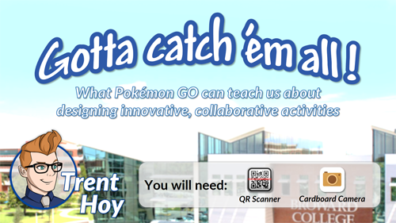
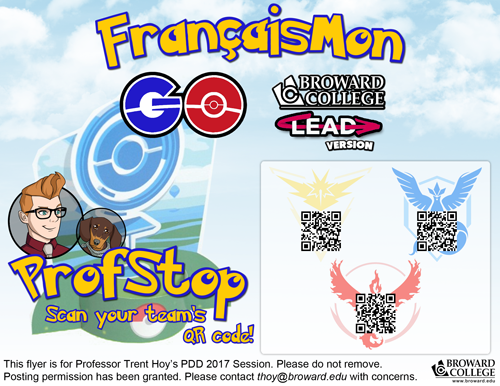
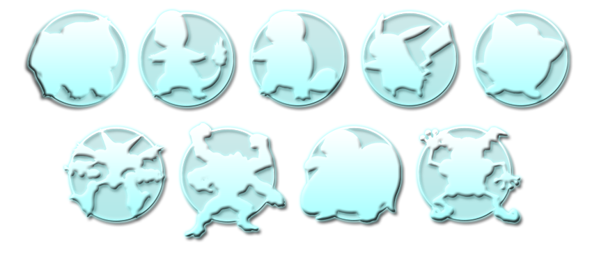
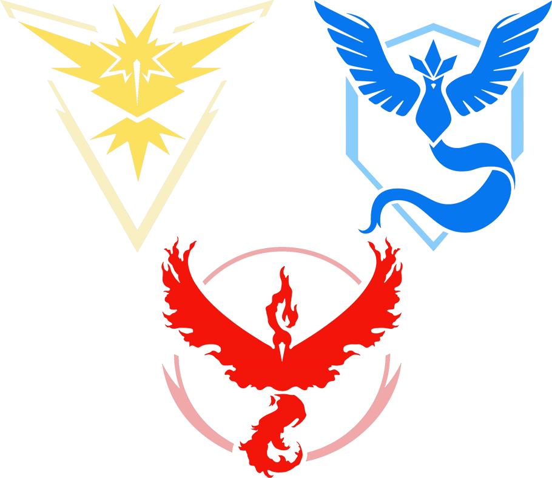

Here'll you find everything you need to experience the session! It may not be quite as fun as participating in person, but at least you can see the activities we did and information we discussed.
PowerPointThis is meant to be experienced as an animated presentation, so be sure to view it in Slideshow Mode! You can also view a web version in Google Slides! |
 |
 |
ProfStopsThanks to advanced Internet technology, you can now warp directly to a ProfStop! No MarcelDex clues, QR Scanner, or team affiliation required! |
Gamification BadgesWant to skip the activities and dive straight into learning about each badge? Here's the entire collection! |
 |
MaterialsTake a look at the materials and tools we used, such as the MarcelDex and PokéScanner! |
|
TeamsA new feature for this PDD edition of FrançaisMon GO! Learn more about each team and how they fared in the competition! |
 |